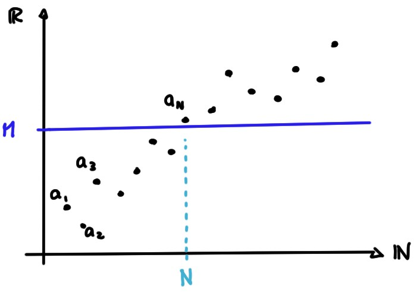

Un comportement possible, pour une suite qui ne possède pas de limite lorsque
\(n\to\infty\), est de tendre vers l'infini.
Soit \((a_n)\) une suite.
On dit que \((a_n)\)
tend vers \(+\infty\) (lorsque \(n\to\infty\))
si pour tout \(M\gt 0\) il existe un entier positif \(N_0\) (qui dépend en général
de \(M\)) tel que
\[
a_n\geqslant M\qquad \forall n\geqslant N_0\,.
\]
On notera (formellement)
\(\displaystyle{\lim_{n\to \infty} a_n=+\infty}\), ou simplement \(a_n\to+\infty\).
On dit que
\((a_n)\) tend vers \(-\infty\) (lorsque \(n\to\infty\)) si pour tout
\(M\lt 0\) il existe un entier positif \(N_0\) (qui dépend en général
de \(M\)) tel que
\[
a_n\leqslant M\qquad \forall n\geqslant N_0\,.
\]
On notera (formellement)
\(\displaystyle{\lim_{n\to \infty} a_n=-\infty}\), ou simplement \(a_n\to-\infty\).

Comme exemples classiques de fonctions qui tendent vers l'infini, on a
Les
puissances entières positives \(p\in \mathbb{N}^*\): \(a_n=n^p\to +\infty\).
Les exponentielles de base \(r\gt 1\): \(a_n=r^n\to\infty\).
Les polynômes de degré \(p\):
\(a_n=c_0+c_1n+c_2n^2+\dots+c_pn^p\), avec \(c_p\neq 0\):
\[
a_n\to
\begin{cases}
+\infty&\text{ si }c_p\gt 0\,,\\
-\infty&\text{ si }c_p\lt 0\,.
\end{cases}
\]
Les logarithmes de base \(r\gt 1\): \(a_n=\log_r(n)\to+\infty\)
Les logarithmes de base \(0\lt r\lt 1\): \(a_n=\log_r(n)\to-\infty\)
Considérons la suite \(a_n=\frac{2n-5}{7}\), et montrons que \(a_n\to \infty\).
Pour cela, fixons un seuil arbitraire \(M>0\). On aura
\[ a_n\geqslant M\quad \Leftrightarrow \quad \frac{2n-5}{7}
\quad \Leftrightarrow \quad n\geqslant 7M+5\,.
\]
Soit donc \(N:= [7M+5]+1\). Si \(n\geqslant N\),
alors \(n\geqslant 7M+5\) et donc \(a_n\geqslant M\).
Considérons ensuite
\(a_n=\frac{n^2}{n+1}\) et montrons que \(a_n\to \infty\).
Pour un seuil \(M>0\), on aura
\[ a_n\geqslant M\quad
\Leftrightarrow \quad
n^2-Mn-M\geqslant 0
\]
Le polynôme \(P(x)=x^2-Mx-M\) possède deux racines,
\(x_\pm=\frac{M\pm \sqrt{M^2+4M}}{2}\); il est positif partout en dehors de
l'intervalle \([x_-,x_+]\). En définissant \(N:= [x_+]+1\),
on a bien \(a_n\geqslant M\) dès que \(n\geqslant N\).
Propriétés des suites qui tendent vers l'infini
Soient \((a_n)\) et \((b_n)\) deux suites.
Si \(a_n\to +\infty\),
alors \(\frac{1}{a_n}\to
0\).
et si \(b_n\to +\infty\), alors
\(a_n+b_n\to+\infty\) et \(a_nb_n\to+\infty\).
et si \(b_n\) est bornée, alors
\(a_n+b_n\to +\infty\) et \(\frac{b_n}{a_n}\to 0\).
et s'il existe \(\delta\gt 0\) tel que \(b_n\geqslant
\delta\) pour tout \(n\) suffisamment grand, alors \(a_nb_n\to+\infty\).
et si \(b_n\geqslant a_n\) pour tout \(n\) suffisamment
grand, alors \(b_n\to+\infty\). (Chien méchant)
Soit \(x_n=n^2-3\sin(n^3)\).
Comme \(a_n=n^2\to\infty\) et \(b_n=-3\sin(n^3)\) est bornée (\(|b_n|\leqslant 3\)
pour tout \(n\)), on a que \(x_n=a_n+b_n\to\infty\).
Soit \((a_n)\) une suite qui n'est pas majorée. Parmis les affirmations
suivantes, lesquelles sont correctes?
[ ] Il existe \(M\) tel que \(a_n\geqslant M\) pour tout \(n\).
[ ] Pour tout \(M>0\), il existe \(n\) tel que \(a_n\geqslant M\).
[ ] \(a_n\to\infty\) lorsque \(n\to\infty\)
[ ] \(a_n>M\) pour tout \(M\).
Si une suite \((a_n)\) ne tend pas vers \(+\infty\), alors
[ ] soit elle tend vers \(-\infty\),
soit elle tend vers une valeur \(L\in \mathbb{R}\).
[ ] \((a_n)\) est majorée.
[ ] il existe \(N\) telle que \((a_n)\) est décroissante à partir de
\(N\).
[ ] pour tout \(M\gt 0\), il existe un entier \(N\) tel que \(a_n\leqslant M\) pour
tout \(n\geqslant N\).
[ ] il existe un \(M\gt 0\) tel que \(a_n\lt M\) pour une infinité d'indices
\(n\).
Soit \(a_n\to+\infty\).
Parmi les affirmations suivantes, lesquelles sont toujours vraies?
[ ] Si \(a_n\leqslant b_n\) pour une infinité d'indices \(n\), alors
\(b_n\to\infty\).
[ ] Si \(a_n\leqslant b_n\) pour tout \(n\), alors \(\frac{1}{b_n}\to 0\).
[ ] Si \(b_n\leqslant a_n\), alors \((b_n)\) est majorée.
[ ] Si \(b_n\) est minorée, alors \(a_nb_n\to \infty\).
[ ] Si il existe \(\delta\geqslant 0\) tel que \(b_n\geqslant \delta\) pour tout
\(n\) suffisamment grand, alors \(a_nb_n\to \infty\).